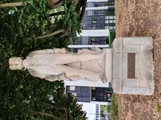

Statue de Louis CHARLES ( du Chaffault de Besné ) à l arret de tram Gare maritime à Nantes
Peter MOUEZA
v = 210

Fig.1 - Statue de Louis Charles Du Chaffault de Besne à la gare maritime de Nantes ( small )BIG
Inscription :
Louis - CHARLES
Comte DUCHAFFAULT, de Besne
Amiral de la marine royale ( 1708 - 1794 )